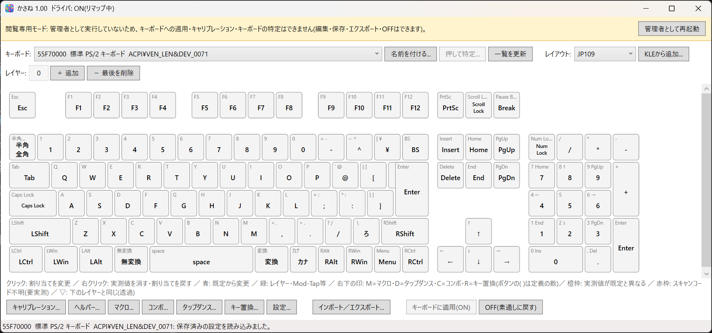
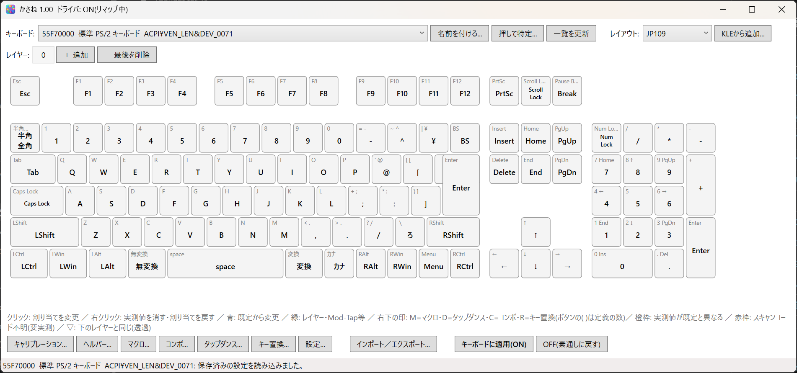
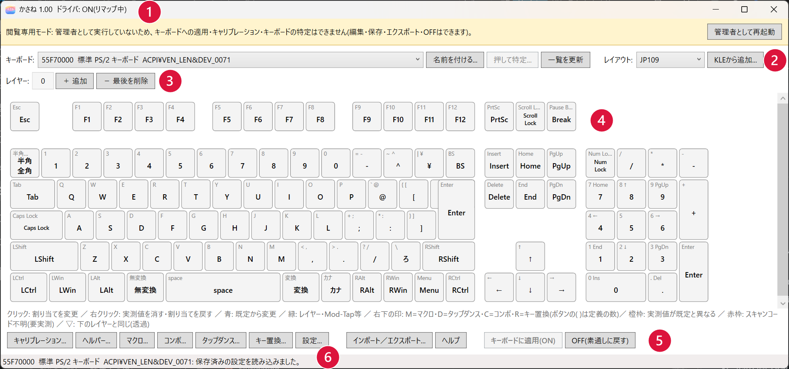
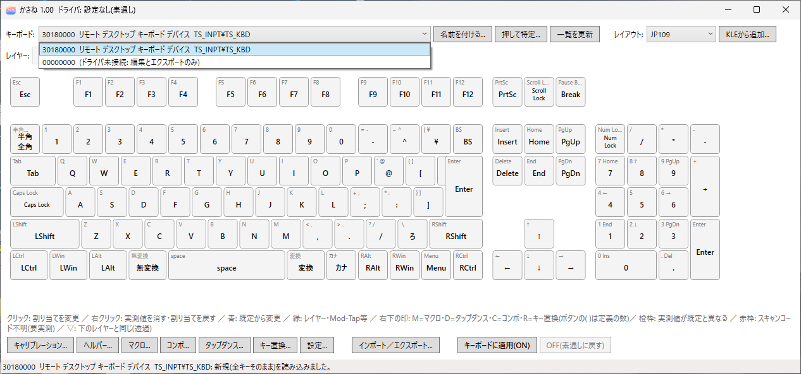
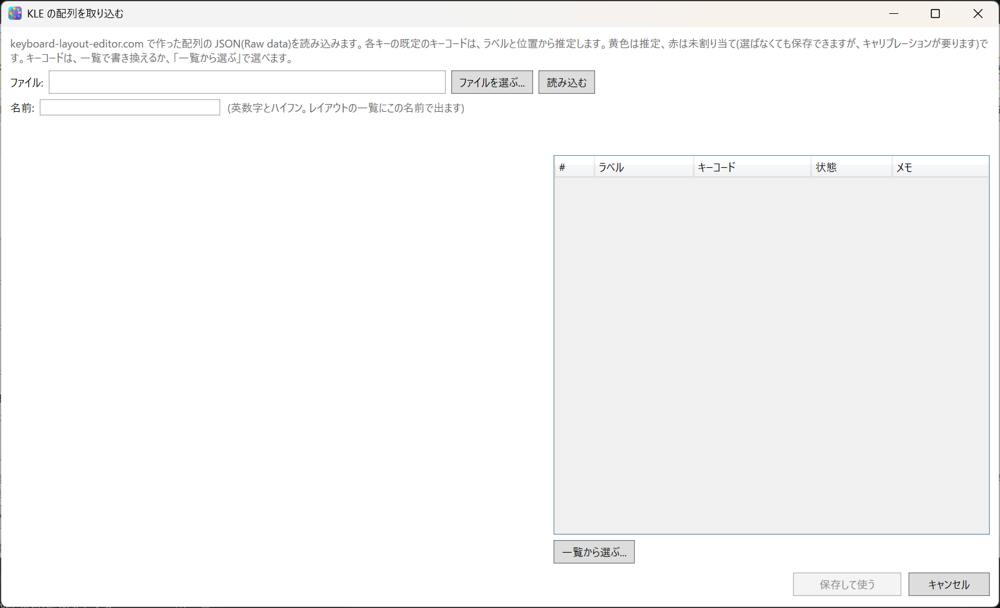
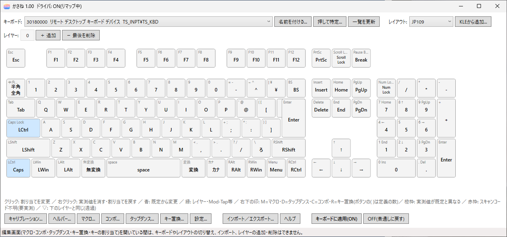
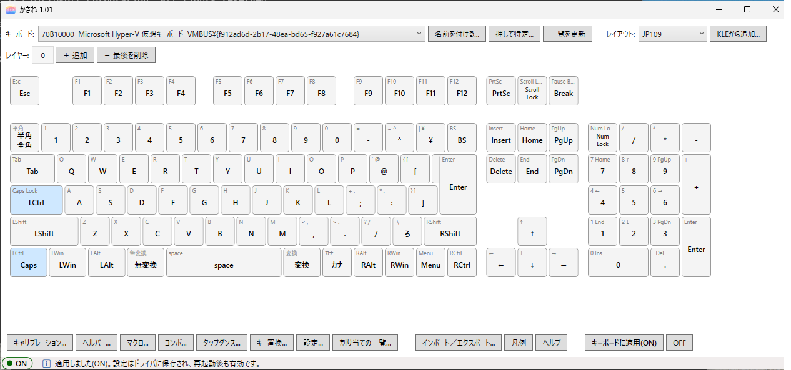
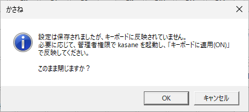
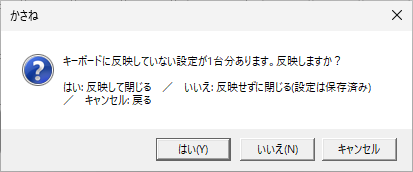

5. エディタの基本画面
kasane（エディタ）は、キーボードのキーに割り当てる動作を編集して、キーボードに適用するアプリです。この章では、メイン画面の各部と、キーを入れ替えて動作を確かめるまでの基本の流れを説明します。キーの割り当ての画面や、マクロなどの編集は、後の章で説明します。
起動する
スタートメニューの applet フォルダにある かさね を右クリックし、管理者として実行 で起動します。トレイのアイコンを左クリックしても開けます。
キーボードへの適用、キャリブレーション（個別キーと全体）、キーボードの特定には、管理者権限が必要です。一般ユーザー権限のアプリに、キー入力を盗み見られたり、勝手にキー入力を仕込まれたりしないよう、ドライバが制限しているためです。
閲覧専用モード
管理者でなく普通に起動すると、画面の上部に黄色い帯が出て、「閲覧専用モード」と表示されます。このとき、キーボードへの適用、キャリブレーション、キーボードの特定のボタンは使えません。編集、エクスポート、OFF は、閲覧専用モードでもできます。

帯の 管理者として再起動 を押すと、管理者権限で開き直します。確認の画面（UAC）が出たら、許可してください。
開き直すと、帯が消えて、キャリブレーション... や 押して特定...、キーボードに適用(ON) が押せるようになります。

画面の各部

| 番号 | 部分 | 内容 |
|---|---|---|
| 1 | タイトルバー | 製品名、バージョン、ドライバの状態 |
| 2 | キーボード行とレイアウト | 設定するキーボードを選ぶ（名前を付ける...、押して特定...、一覧を更新）。右側で、キーボードの配列を選ぶ（KLEから追加...） |
| 3 | レイヤー行 | レイヤーの一覧。＋ 追加、− 最後を削除 |
| 4 | キー図 | クリックでキーの割り当てを変える。右クリックでメニュー |
| 5 | 下部のボタン | キャリブレーション...、ヘルパー...、マクロ...、コンボ...、タップダンス...、キー置換...、設定...、インポート／エクスポート...、ヘルプ、キーボードに適用(ON)、OFF(素通しに戻す) |
| 6 | ステータス欄 | 操作の結果を表示 |
タイトルバー
バージョンと一緒に、ドライバの状態が出ます（例: kasane 1.00 ドライバ: ON（リマップ中））。
| 表示 | 意味 |
|---|---|
| ON（リマップ中） | 設定がドライバに入っていて、リマップが効いている |
| OFF（素通し、設定はドライバに残っています） | 設定は残っているが、リマップは止まっている |
| 設定なし（素通し） | ドライバに設定がない |
画面の変更をまだ適用していないときは、その旨も出ます。未保存の変更があるときは * が付きます。「OFF なのに入れ替わる」「設定したのに効かない」ときは、最初にここを見てください。
設定するキーボードを選ぶ
キーボード の一覧から、設定したいキーボードを選びます。各行は、次の順に表示されます（ないものは省かれます）。
UniqId（8 桁）、つけた名前、Windows 上の名前（デバイスマネージャーの名前や製品名）、ハードウェア ID

- 押して特定...: ノート PC に外付けキーボードをつないでいるときなど、どれが目的のキーボードか分からないときに使います。押すと小さな画面が開くので、目的のキーボードでどれかキーを 1 つ押してください。押したキーボードが選ばれます。押したキーは Windows には送られません。管理者権限が必要です。
- 名前を付ける...: 選んでいるキーボードに、わかりやすい名前（例: 「仕事用」）を付けます。空にすると消えます。名前は画面の表示とエクスポートのファイルだけに使われ、キーの動作には関係しません。
- 一覧を更新: キーボードの一覧を取り直します。
- 一覧に「(ドライバ未接続: 編集とエクスポートのみ)」しかないときは、ドライバが動いていないか、ライセンスが有効になっていません。16. トラブル対応、既知の制限などを見てください。
レイアウトを確認する
レイアウト が、お使いのキーボードと合っているかを確かめます。
| レイアウト | キーボード |
|---|---|
JP109 |
日本語（JIS） |
US104 |
英語（US） |
10KEY |
テンキー単体（17 キー） |
初回は、Windows の表示言語に合わせて、JP109 か US104 が選ばれています。違っていたら切り替えてください。切り替えると、割り当てがリセットされると確認が出るので、OK を押します。
KLE から配列を追加する
同梱のレイアウトにない配列（ISO、60%、特殊な配列など）は、Keyboard Layout Editor（KLE）で作った配列を取り込んで使えます。
- KLE のサイトで配列を作ります。Raw data タブの内容を、JSON ファイルに保存します（Download JSON でも構いません）。キーの回転（Rotate）は使えません。
- KLEから追加... を押します。「KLE の配列を取り込む」の画面で、ファイルを選ぶ... からそのファイルを選び、読み込む を押します。
- 一覧に、各キーの既定のキーコードを、ラベルと位置から推定した結果が出ます（列は、ラベル、キーコード、状態、メモ）。緑は確定、黄色は推定、赤は未割り当てです。推定が違うキーや赤のキーは、一覧の キーコード を書き換えるか、一覧から選ぶ... で選びます。赤のまま保存しても使えますが、そのキーはキャリブレーションが必要です。
- 名前（英数字とハイフン）を付けて、保存して使う を押します。レイアウト の一覧に出ます。

同梱のレイアウトと同じ名前は使えません。同じ名前で保存し直すと、上書きされます。
キーを入れ替える
例として、次の入れ替えを設定します。
| キーボード | 入れ替えるキー |
|---|---|
| JIS | 英数キー（Caps Lock 英数 と刻印されたキー）と、左 Ctrl |
| US | Caps Lock と、左 Ctrl |
レイヤー が 0 になっていることを確かめてから、JIS では次のようにします。
- キー図の 英数（Caps Lock） キーをクリックします。
- 開いた画面の左の一覧から 修飾キー を選び、LCtrl（KC_LCTRL） を押して OK を押します。
- キー図の 左 Ctrl（LCtrl） キーをクリックします。
- 左の一覧から 記号・編集 を選び、Caps（KC_CAPSLOCK） を押して OK を押します。
US では、同じ手順で、Caps Lock を KC_LCTRL に、左 Ctrl を KC_CAPSLOCK にします。
変更したキーは青色になり、中央に新しい動作（LCtrl、Caps）が表示されます。キー割り当ての画面の詳細は、8. キーの割り当てを見てください。

間違えたときは、そのキーを右クリックして、このレイヤーの割り当てを戻す を選びます。
キー図の見方
キーの左上の小さな文字がキーの刻印、中央の大きな文字が、そのキーに今割り当てられている動作です。何も変更していないキーは、刻印と同じです。
| 色や印 | 意味 |
|---|---|
| 青 | 割り当てを変更したキー |
| 緑 | レイヤーや Mod-Tap などの動作が割り当てられたキー |
| 橙の枠 | キャリブレーションで実測した値が、標準と違うキー |
| 赤の枠 | どのキーか分からないキー（スキャンコードが不明） |
| ▽ | 透過（下のレイヤーの割り当てを使う） |
| 右下の M | マクロ（割り当てが MACRO(n)） |
| 右下の D | タップダンス（TAPDANCE(n)） |
| 右下の C | コンボの対象のキー（どのレイヤーにも出る） |
| 右下の R | キー置換の対象のキー（そのキーを出すレイヤーに出る） |
印は M、D、C、R の順に並びます。キーにマウスを載せると、内容（「キー置換3: MOD_LSFT を押しながら → KC_Z」など）が出ます。
画面下の マクロ...、コンボ...、タップダンス...、キー置換... には、定義の数が出ます（例: マクロ(2)...）。設定ダイアログで機能を OFF にしていると、(2・OFF) のように出ます。定義はあっても、動きません。
レイヤー
＋ 追加 でレイヤーを増やします。レイヤー 0 のどれかのキーに MO(1) などを割り当てると、そのキーを押している間だけ、レイヤー 1 の割り当てになります。レイヤーの一覧を右クリックすると、次のメニューが出ます。
| 項目 | 内容 |
|---|---|
| このレイヤーをエクスポート... | レイヤー 1 枚を、ファイルに書き出す |
| レイヤーをインポート... | ファイルから、レイヤーを読み込む |
| レイヤー N に名前を付ける... | わかりやすい名前を付ける（画面の表示とエクスポートのファイルだけに使う） |
適用する
画面下の キーボードに適用(ON) を押します。ステータス欄に「適用しました(ON)。…」と出れば完了です。この瞬間から、入れ替えが効きます。
設定はドライバに保存されるので、パソコンを再起動しても有効なままです。kasane を起動しておく必要もありません。

「適用できません」と出たときは、表示された理由を直してから、もう一度押します。このとき、キーボードの設定は何も変わっていません。
動作を確かめる
メモ帳を開いて確かめます。
JIS（英数と左 Ctrl の入れ替え）
- 英数キーを押しながら
Aを押すと、全選択されます。C、Vで、コピーと貼り付けができます。 - 日本語入力（IME）を ON にした状態で左 Ctrl を押すと、英数キーとして動きます。
- Shift と左 Ctrl を押すと、CapsLock が切り替わります。
US（CapsLock と左 Ctrl の入れ替え）
- CapsLock を押しながら
Aを押すと、全選択されます。C、Vで、コピーと貼り付けができます。 - 左 Ctrl を押すと、CapsLock が切り替わります。ランプが点灯したり消灯したりします。
どちらも、右 Ctrl とその他のキーは、今までどおり動きます。
元に戻す
| やりたいこと | 操作 |
|---|---|
| 一時的に入れ替えを止める（設定は残る） | OFF(素通しに戻す) を押す。再開は キーボードに適用(ON) |
| 設定を変える | キーをクリックして変更し、もう一度 キーボードに適用(ON) |
| 入れ替えをやめる | 入れ替えたキーを右クリックして このレイヤーの割り当てを戻す を選び、キーボードに適用(ON) を押す |
| アンインストールする | 2. アンインストールを見る |
ヘルプを開く
画面下の ヘルプ を押すか、F1 キーを押すと、このヘルプが、ブラウザーで開きます。トレイのメニューの ヘルプ からも、同じヘルプを開けます（4. トレイ）。
このヘルプは、インストール先の manual フォルダにあります。開くブラウザーは、Windows の設定（既定のアプリ）で決まります。表示言語を英語にしても、同じ（日本語の）ヘルプが開きます。
保存と閉じるときの確認
エディタに保存ボタンはありません。編集した設定は、kasane を閉じるとき、別のキーボードに切り替えるとき、キーボードに適用(ON) を押したときに、自動で保存されます（保存先は15. バックアップと移行）。
保存したが、キーボードに反映していない設定があると、閉じるときに確認が出ます。
- 閲覧専用のとき: 「設定は保存されましたが、キーボードに反映されていません。必要に応じて、管理者権限で kasane を起動し、「キーボードに適用(ON)」で反映してください。このまま閉じますか？」と出ます。OK で閉じて、キャンセル で、閉じずに戻れます。
- 管理者として起動しているとき: 「キーボードに反映していない設定が 1 台分あります。反映しますか？」と出ます。はい で反映して閉じます。いいえ は、反映せずに閉じます（設定は保存済みです）。キャンセル で戻ります。
閲覧専用のときの確認です。

管理者として起動しているときの確認です。

保存済みの設定が読めないときや、そのレイアウトが見つからないときは、保存済みの設定を使わずに開きます。この状態では自動で保存せず、閉じるときなどに「保存すると置き換わります」と確認します。元の設定を失わないためです。
編集画面を開いている間の制限
マクロ、コンボ、タップダンス、キー置換、キーの割り当ての編集画面は、別のウィンドウです。いくつでも同時に開いたまま使えます。
編集画面が開いている間は、画面の内容とプロジェクトがずれないよう、次の操作ができません。編集画面をすべて閉じると、使えます。
- キーボードとレイアウトの切り替え
- 名前を付ける、押して特定、一覧を更新、KLEから追加
- インポート／エクスポート
- レイヤーの追加と削除
kasane を閉じようとしたときに編集画面が開いていれば、確認が出ます。